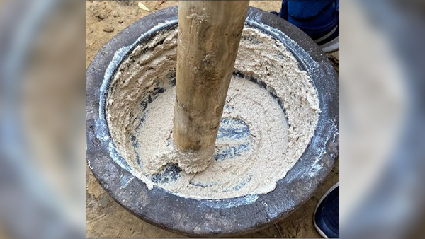

Badam Ragda

Description
You must have heard of the Indian smoothie Lassi, but have you ever heard of the Badam Ragda, the OG power drink and protein shake of the pehlwaans of India.
Pehlwaans (or wrestlers) are in dire need of protein all the time. Badam Ragda is a delicious and loaded drink made with a host of nuts, seeds, dry fruits and even spices.
It can fill you up in just one serving, and is incredible for managing weight too.
Ingredients
- almonds - main ingredient
- pisat, cashews
- rock sugar
- black peppers, white pepper
- cardamom
Steps
- Prepare Kundi (stone pot) and shoota (made of neem wood)
- Put all ingredients like almonds ,pista into kundi
- pounds and crushes all the ingredients using shoota
- put some water into kundi
- grind it into a paste using shoota
- put some more water and drain it using a cotten cloth
- drink it. it is one of the Best recovery drink for Wrestlers and other high body demand players